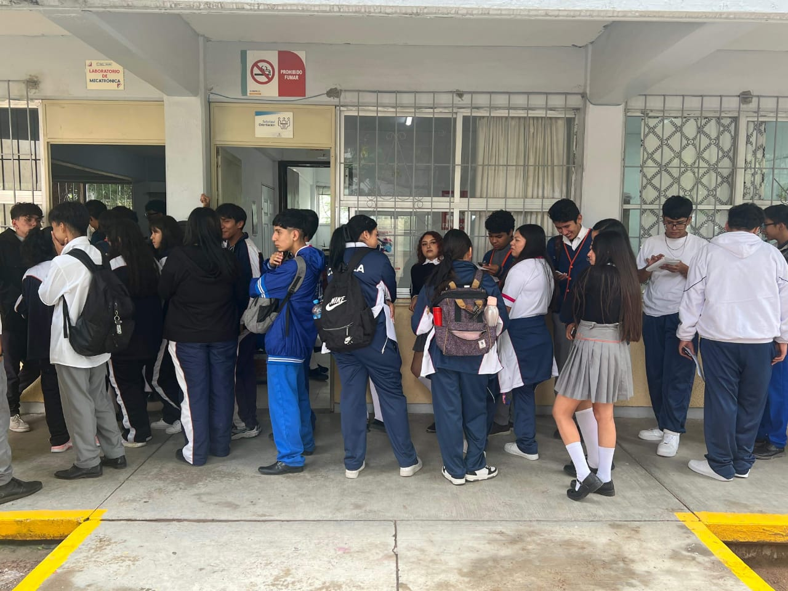
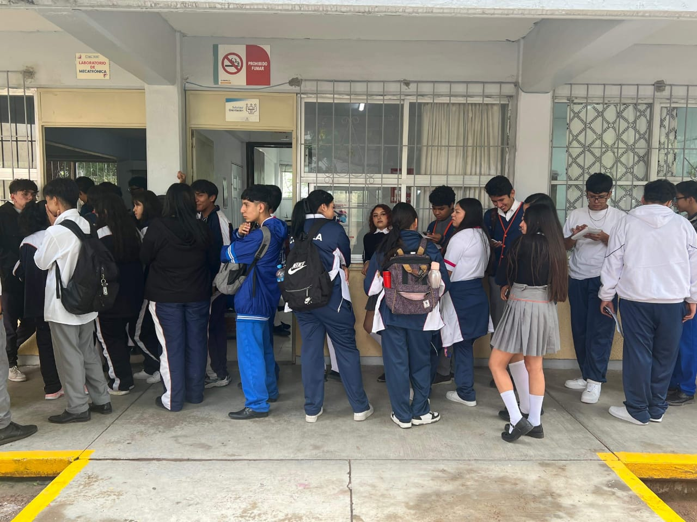
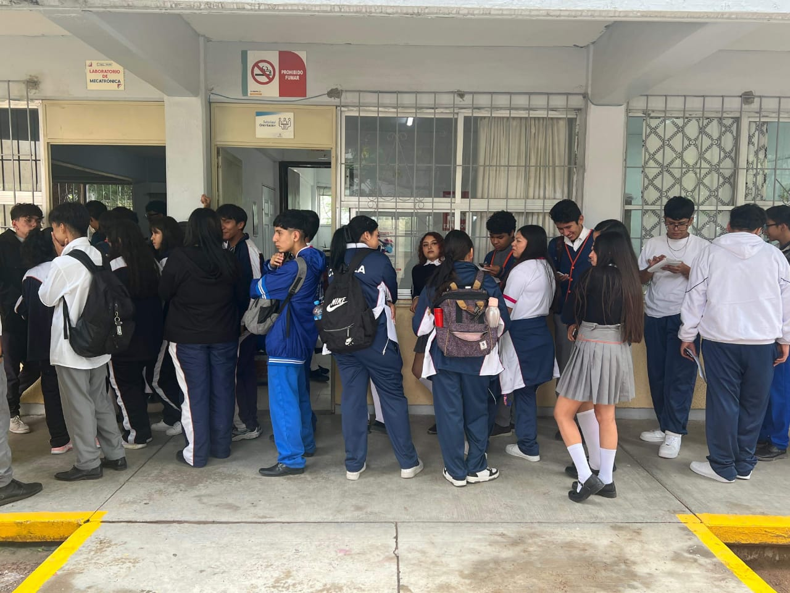
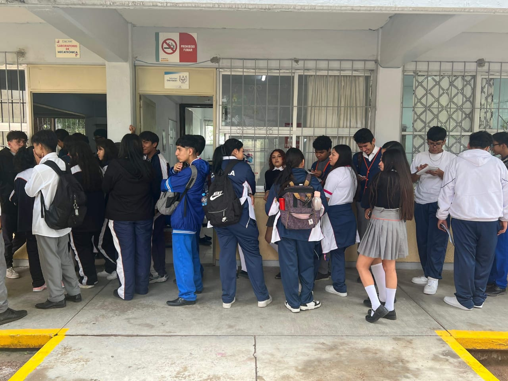

Conocer mas sobre si necesitas lentes.

Contactar al DIF para que los lentes sean gratuitos a quien los necesite.
Obtener los resultados para la elaboracion de lentes.
Por medio de una encuesta telefonica se les harasaber si son candidatos a recibir ayuda al 100% o al 50% monetariamente.
Información sobre el proceso de fabricación de los lentes.

Información sobre la ceremonia de entrega de lentes.